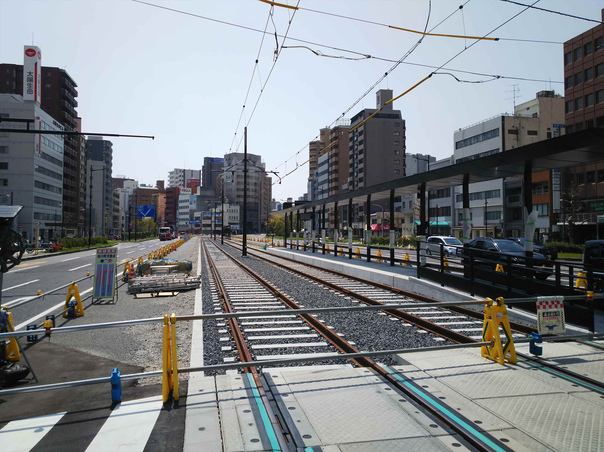
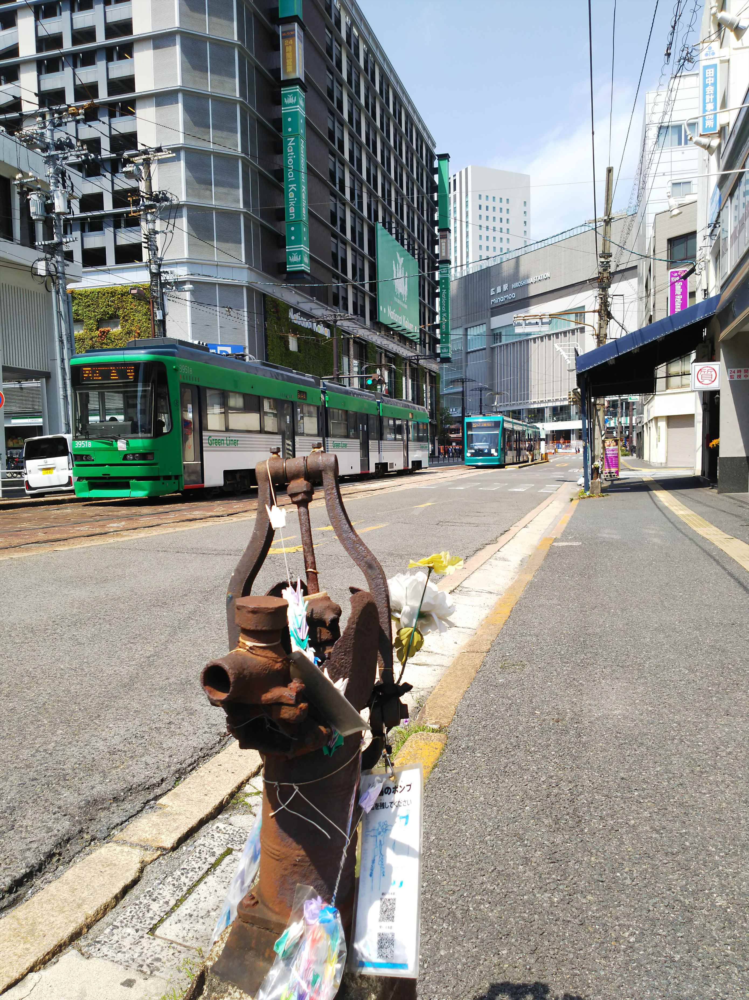
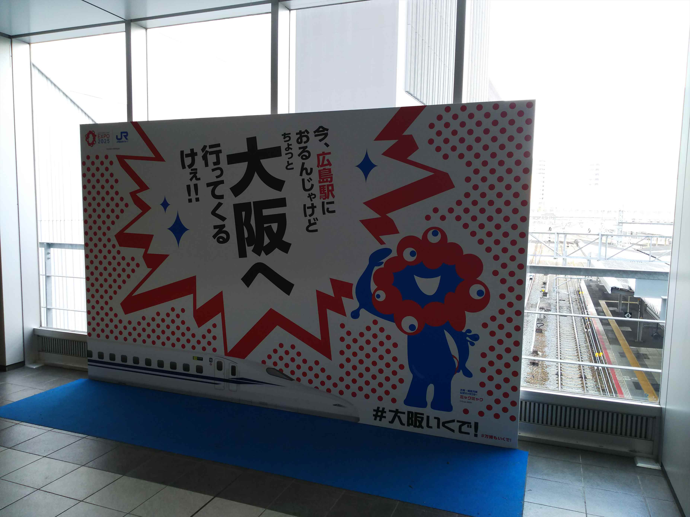

３日連続券・・・。もちろん一日分捨てる訳にもいかず、引き続き青春１８旅を続けます！
またまた早朝の姫路。兵庫では朝から３分遅れてき
よったので少し焦りました。
これも珍しい三原行き。なかなか長距離っすよ。
終点ひとつ手前の糸崎で乗り継ぎます。
広島駅に到着。
広島駅の広電のりば。絶賛工事中。
駅ビルもでけて、かなり変わりましたわ。
さて、広電乗って（宮島まで同一運賃になってて、
近場に行くのは割高やん）的場町で下車。
実はこの区間、夏には廃止になります。
しばらく街の中心に向かって歩いて行くと、線路の
工事が！

そうです、廃止というか、路線変更になるんすよね。
ここから駅にダイレクトに向かう線に付け替えにな
るので、多くの人には便利になります。
正面の奥が広島駅ビルです。
時間ないので、現行線路に沿って広島駅まで歩いて
戻ります。
なくなってしまう猿猴橋駅。

このポンプ、被爆ポンプです。
夏からは後ろに見えてる高架で駅に突っ込むように
なります。
この光景も見納めか・・・
駅ビルのホーム工事も出来かけてますね。

広島駅に戻ります。
万博の巨大ポスターもありました。皆さん、来てく
ださ～い
ひき続き西下していきます。
宮島まではインバウンド客も多くて混んでました。
厳島を過ぎたあたりにある玖波駅にやってきました。
駅前にええ感じのお好み焼き屋が！ここで食べたら
良かった。
駅前からこいこいバスに乗り込みます。カープとか
けてるんかな？
ばえスポットの下瀬美術館を外からのぞこうと、手
前で降りて行っみましたが、外からは見えず。そり
ゃそーか。
こんな感じです
小方港にたどり着きました。間に合わんかと、あせ
って久々に走りましたわ
そう、本日の目的地は阿多田島です。
ええ感じのフェリーが泊ってます。
出航です。
切符は船内の自動販売機で買うという珍しいスタイ
ル。
工場地帯の真横を進みます。
３０分ぐらいで見えてきました。
思ってたよりにぎやかな港です。
フェリーやのに桟橋に横付けで、どうやって車を降
ろすんやろと思ってみてたら、なんとサイドが開い
て、そこから軽トラが上陸していきました。
これまでいろいろフェリーを見てきましたが、この
パターンは初めてっす。

まぁ、特に何がある、っちゅうわけではありません。
のどかな春の午後。いいっすね。
折り返しは釣り客が大量に乗り込んでました。
無事、本州側に戻ってきました。
またこいこいバスに乗って、大竹駅に戻ります。
ちょうど広電コラボ色の２２７系が向いにやってき
ました。
さすがに関西で他私鉄コラボの車両は出んやろなぁ。
さて、あとは帰るだけ。
久々に瀬野駅で乗り継ぎました。
運よく補機つきの貨物がやってきました。やっぱ持
ってますね。